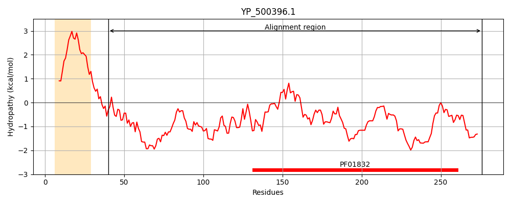
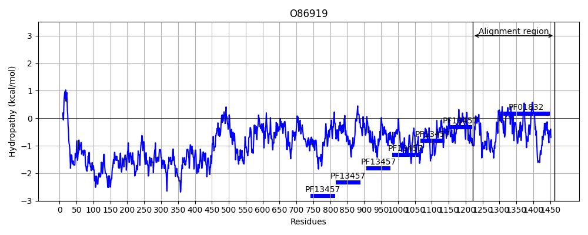
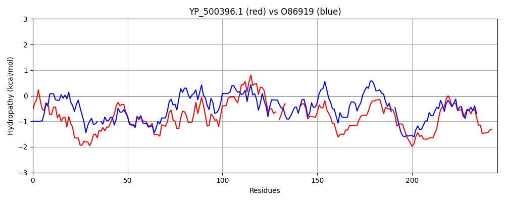

Hit Accession: O86919
Hit TCID: 1.C.105.2.7
Hit Description: gnl|BL_ORD_ID|7698 gnl|TC-DB|O86919|1.C.105.2.7 AAS surface protein OS=Staphylococcus saprophyticus GN=aas PE=4 SV=1
Mach Len: 245
e:0.000000
Query TMS Count : 1
Hit TMS Count: 0
TMS-Overlap Score: 0.000000
Predicted Substrates:CHEBI:25367;molecule
BLAST Alignment:
Score: 527 , Bit scores: 207 bits, E-value: 1.0e-60, Alignment length: 245, Percentage identity: 48
Query: 40 KSDIKIEKLNVTLNDAAKKQINNYTSQQVSNKKNDAWRDASATEIKSAMDSGTFIDNEKQKYQFLDLSKYQGIDKNRIKRMLVDRPTLLKHTDDFLKAAKDKHVNEVYLISHALLETGAVKSELANGVE-IDGK-------KYYNFYGVGALDKDPIKTGAEYAKKHGWDTPEKAISGGADFIHKHFLSSTDQNTLYSMRWNPKNPGEHQYATDIKWAESNATIIADFYKNMKTEGKYFKYFVYK 276
K +K K +TL+ A Q Q+ + W DASATEIK+AMDS I + QKYQFL L K Q I + ++LV + L + F +AAK ++NEVYLISHALLETG S+LANG + ++GK KYYN +G+GA+D D +K G AK +GW+T +KAI GGA FI +++ QNTLY MRWNP+NPG HQYATD+ WA NAT I FY +M GKYF YK
Sbjct: 1221 KELVKYYKSGLTLDQAVAIQKGLKFKPQIQHTAGK-WEDASATEIKNAMDSSKLIKDPTQKYQFLRLDKSQNISSADLDKLLVGKGILEGQGEAFSEAAKAYNINEVYLISHALLETGNGTSKLANGGDVVNGKVVTNGKDKYYNMFGIGAVDSDAVKQGFATAKNNGWNTVKKAIVGGAKFIAGSYINQ-GQNTLYKMRWNPENPGVHQYATDVAWAAHNATRIKGFYDSMGKLGKYFDVDTYK 1463 | Protein Hydropathy Plots: |
|---|
|  |  |
Pairwise Alignment-Hydropathy Plot:
|
|---|
|  |